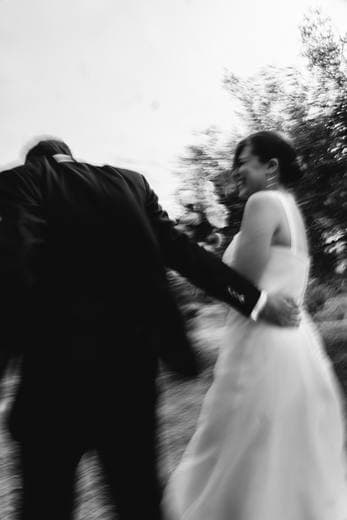
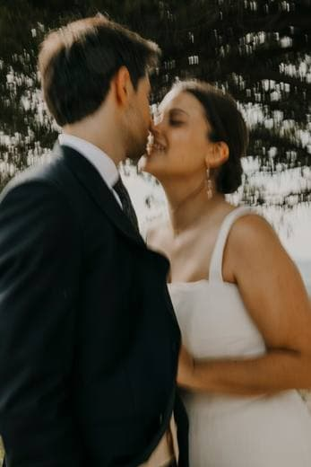

La diapositiva es la única pieza de la fotografía analógica que se llama como tu producto: un positivo. No es una metáfora prestada — es el objeto que tu marca ya nombra. Las tres propuestas parten de su anatomía: la montura, la ventana y el punto de orientación.
A El Marco
Una montura de diapositiva, reducida a tres trazos: el cartón, la ventana 3:2 y el punto de orientación que el laboratorio ponía para saber cómo proyectarla. Ese punto es ámbar — y es el mismo punto que hoy cierra tu wordmark.
El wordmark pierde su punto final porque el punto se muda a la marca: «Positiva» + marco marcan juntos, nunca por separado.
Es la propuesta más literal y la más disciplinada. Funciona como marco real: cualquier fotografía de un cliente puede vivir dentro de la ventana, y la marca se convierte en un contenedor infinito — avatares, favicon, esquinas de galería, sellos de agua.

Marca de aguaB El Monograma
La montura es la panza de una P; una pierna la convierte en letra. El punto ámbar flota en la ventana como el grano de luz en el proyector. Ningún otro estudio de galerías tiene una letra construida con el objeto del oficio.
No es una P con una diapositiva dentro. Es una diapositiva que, leída con intención, ya era una P.
Es la propuesta con más personalidad y la más «marca registrada» de las tres: funciona sola en un avatar de 24 píxeles, bordada en una camiseta o proyectada de seis metros. Su riesgo es el contrario al de A: pide un pelín más de tiempo para leerse. Los monogramas buenos siempre lo piden.
C El Positivo
La ventana de la montura, recortada en forma de más. Tres lecturas en un solo trazo: el positivo fotográfico que da nombre a la marca, el gesto de tu producto — el cliente marca sus favoritas, suma — y la luz que atraviesa la diapositiva en el proyector.
Positiva es la única plataforma cuyo nombre es un signo. Esta marca lo escribe con el objeto del oficio.
Es la más rotunda en tamaños pequeños (es un bloque sólido) y la más «producto»: el mismo «+» puede ser el botón de marcar favorita dentro de la galería, dibujado en lápiz graso rojo al activarse. Marca e interfaz contarían la misma historia. Sus riesgos: pierde la ventana 3:2, y en negativo blanco-sobre-negro puede rozar la lectura «cruz sanitaria» — se mitiga usándola en ámbar, en trazo fino o en el rojo graso del lápiz.

Favorita marcadaLectura del estudio
| Propuesta | Fortaleza | Riesgo | Brilla en… |
|---|---|---|---|
| A · El Marco | Lectura inmediata «foto profesional». Sistema-contenedor infinito: cualquier imagen vive dentro. | La más discreta; en línea fina exige cuidado por debajo de 20 px. | Marcas de agua, esquinas de galería, papelería. |
| B · El Monograma | La más distintiva y apropiable — una letra que solo Positiva puede tener. | Pide un segundo de lectura; la pierna necesita aire debajo. | Avatares, app icon, bordados, señalética. |
| C · El Positivo | Nombre, producto y gesto en un solo signo. Imbatible en tamaños mínimos. | Pierde la ventana 3:2; en negativo puede evocar cruz sanitaria (mitigable con ámbar o trazo). | Producto e interfaz: el «+» de marcar favorita es la propia marca. |